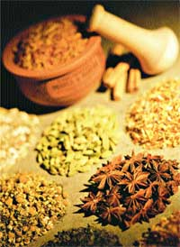

Explore the options and choose what's right for you.
Thirty years ago, conventional and complementary health practitioners were calling each other nasty names and dismissing each other's treatments as useless or dangerous. These days, many complementary health care practitioners are willing to admit that for emergency medicine, conventional treatments usually are the best option. Meanwhile, conventional doctors are embracing diet changes, exercise and stress management as valuable complements to medical care and are more willing to accept other holistic therapies as valid treatments. Because of this growing acceptance, many people are finding they don't have to choose between complementary or conventional medicine, but can have the best of both.
So where should you turn for your health care needs? The truth is that most medical treatment begins in the same place. Think of health care as a ladder, with each rung representing another option. The first rung should be self-care, when you decide whether the aspirin - or willow bark - in your medicine cabinet will be enough to make you feel better, or if you might have a more serious problem.
If self-care doesn't provide sufficient relief, the next rung should be conventional medicine, which is usually best for diagnosing serious conditions. Initially, that's what you need: a clear idea of how minor, or major, your problem is. If it's serious, you need to get that information as soon as possible so you can begin treating the problem. If it's minor, then you're free to decide which steps on up the ladder to take: conventional, complementary or a combination of the two.
Many people feel most comfortable with conventional medicine, which certainly is successful at treating many health problems. But even if you decide to go this route, it's important to take an active interest in your medical care. Doctors have embraced many lifestyle treatments, but they still usually rely on drugs and surgery, both of which carry their own risks. Before accepting any prescription, be sure you understand all of the drug's possible side effects. Ask your doctor, and then ask the pharmacist who fills your prescription. You also might check a consumer health Web site, such as www.webmd.com. Before opting for surgery, get more than one opinion.
If you're new to complementary therapies, you'll find any number of reasons to consider giving them a try. For some conditions, herbal medicines can have the same result as a conventional prescription, but with fewer side effects. Holistic treatments also can be an especially good choice for treating stress-related diseases, as well as for managing chronic pain.
Traditional Treatments
Scientists have been paying more attention to holistic medicine recently, but these treatments aren't exactly breaking news. Many have a long history of use, and are still being practiced around the world. Three of the most widely available forms of holistic medicine in the United States are herbalism, naturopathy and Chinese medicine, all traditional treatments.
Herbalism. Herbs continue to impact modern medicine - an estimated 25 percent of drugs derive directly or indirectly from plants. Herbal medicines are used extensively in naturopathy, and various traditional medicines. In addition, independent of these healing arts, some practitioners call themselves "herbalists." They typically prescribe herbal teas or tinctures (herb essences prepared by steeping herbs in alcohol) for a variety of everyday ills, among them, constipation, premenstrual syndrome (PMS), insomnia, anxiety, lethargy and weakened immune systems.
Hundreds of studies show that herbal medicines treat many conditions. Recently, Korean researchers gave a placebo or ginseng (900 milligrams three times a day) to 45 men with erectile dysfunction. The ginseng group experienced significant improvement. In another study published in 2002, Australian researchers gave 126 people with chronic dandruff an ordinary shampoo or one containing 5 percent tea tree oil. Tea tree oil is a potent herbal antiseptic that kills the fungus that causes dandruff. After four weeks, flaking improved 41 percent in the tea tree group, and only 11 percent in the plain-shampoo group.
Naturopathy. This branch of holistic medicine was practiced widely during the 19th century in Europe and the United States, and despite the more recent dominance of conventional medicine, it has never disappeared. Naturopaths have a Western scientific understanding of the body, and treat illness with a combination of diet changes, hot baths, and medicinal herbs or herb-derived drugs.
Consulting a naturopath is similar to seeing a conventional doctor. Naturopaths typically take the same type of medical history and perform a physical exam. Different naturopaths have different therapeutic proclivities. Some favor supplements or herbs; others prefer Chinese medicine.
Naturopaths helped develop the modern pharmaceutical industry, being among the first to extract medicinal compounds from herbs. Ironically, the pharmaceutical industry turned to synthetic drugs, which eclipsed naturopathy and just about put it out of business. Most physicians embraced pharmaceuticals, but a small group, mainly in the Pacific Northwest, continued to prescribe more natural treatments. In recent years, disenchantment with drug side effects has spurred a naturopathy revival.
Chinese medicine. Mention Chinese medicine and most people think of acupuncture, which is based on the idea that life energy, or Qi, flows around the body along invisible pathways called meridians. Qi flows freely through a healthy body, but illness comes from a blocked energy flow. Acupuncture treatments counter this problem by releasing blocked energy to restore health.
Western physicians remain skeptical of Qi and the meridian theory, but there is no denying that acupuncture works for many conditions, especially pain problems. In a 2002 study, Swedish researchers gave 90 women in labor either standard anesthesia or acupuncture instead of or in addition to the standard treatment. The acupuncture group reported significantly less labor pain.
Other recent studies show that acupuncture helps treat urinary tract infections, infertility, arthritis and even cocaine addiction. Assuming the needles are sterilized, acupuncture also is remarkably safe. In 1997, officials with the National Institutes of Health concluded: "The data in support of acupuncture are as strong as those for many accepted Western medical therapies. ... [and] the occurrence of adverse events has been documented to be extremely low."
In addition to acupuncture, Chinese medicine also makes extensive use of diet changes and herbal medicines based on a philosophy completely distinct from Western medicine. Traditional Chinese medical practitioners make diagnoses based on what they hear, see and feel, without the aid of high-tech, Western-style diagnostic tests; many diagnoses are made by studying the patient's pulse.
Relaxation therapies
Some of the most common complementary treatments are methods to help you relax. These therapies can be a good entry point into holistic medicine if you don't let their simplicity fool you into thinking they won't be effective.
The effects stress has on health are well documented. For those who are already ill, anxiety aggravates symptoms, particularly pain. Anxiety also causes or contributes to many health conditions, including asthma, insomnia, headaches, low back pain and upset stomach. For any of these ailments, relaxation therapies can provide significant relief by reducing anxiety.
Meditation. Until the 1970s, most Americans viewed meditation as something Indian gurus did on remote mountain tops. Then Harvard cardiologist Herbert Benson showed that the profound relaxation produced by meditation emerged not from religious experience, but rather from natural, easily accessible physiological changes. His 1975 best seller, The Relaxation Response, secularized meditation and popularized it in the United States.
Today, meditative breathing and mental focus exercises have been incorporated into everything from childbirth classes to diabetes education, and studies show meditation not only helps control anxiety and pain, but also can boost the immune system. Though meditation can have a powerful effect on your health, it's one therapy that doesn't require the supervision of a health professional. All that's necessary to meditate is taking the time to sit quietly and empty your mind by focusing on your breathing or on a single word or phrase, called a mantra. Work up to 20 minutes a day over a few months.
Massage. Even a simple back or shoulder rub can be relaxing, but it's really no substitute for a professional massage, which works wonders on stress and muscle tension. Several studies have shown massage can produce remarkable health benefits. In a 1998 study at the University of Miami's Touch Research Institute (TRI), researchers had the parents of 32 children with severe asthma either coach relaxation exercises or give 20-minute massages. After 30 days, children who received the massage treatment had significantly easier breathing compared to the other group. A TRI study conducted in 2000 found that massage helps relieve PMS.
If you've never had a professional massage, here's what to expect. At an appointment, you typically lie on a padded table in a warm room, wearing only underwear and covered by a sheet. The two main schools of massage are Swedish and deep-tissue. Swedish massage involves long, gliding strokes or muscle kneading. Deep-tissue massage presses into muscle and connective tissue. Neither Swedish massage nor deep-tissue work should hurt, but the latter can feel intense. If intensity crosses over into pain, say so, and the masseuse will ease the pressure. Swedish massage therapy uses lotion, scented with aromatic plant oils, to help the practitioners" hands glide more smoothly.
Biofeedback. Another door into deep, meditative relaxation is biofeedback. Effective for relaxing specific muscle groups, biofeedback involves small machines with visual displays that look like speedometers. Say you suffer from tension headaches, a condition caused by chronic muscle tension in the head, neck and shoulders. At a biofeedback office, you sit in a chair, and the trainer pastes small tension-sensing electrodes to the muscles that need to relax. The dial on the visual display shows you how tense those muscles are. As you relax, the dial moves. Using meditative deep breathing and conscious relaxation, it usually doesn't take long before people can move the dial into the deep-relaxation zone. Eventually biofeedback clients can dispense with the machinery and relax their muscles as needed.
Biofeedback helps treat a variety of conditions, including migraine headaches and constipation (a prevalent medical condition).
In a 2000 study at Cincinnati Children's Hospital, 20 children with migraines, average age 11, used biofeedback to control their headaches. Five months later, their migraines were significantly less frequent and severe.
Researchers at the University of Iowa use biofeedback to teach chronic constipation sufferers to relax their anal sphincters. In a recent study involving 80 patients, the training helped all of them, and a year later, 90 percent continued to report benefits.
HOMEOPATHY
Homeopathy is one of the most controversial complementary therapies because it's Western, yet it defies the known laws of chemistry, physics and pharmacology. No one knows how or why it works - neither homeopaths who swear by it, nor conventional doctors, many of whom often swear at it.
Homeopathy was the brainchild of a German doctor, Samuel Hahnemann (1755-1843), who became disenchanted with the treatments typical of 18th-century medicine: bleeding, mercury, powerful laxatives (cathartics) and drugs that induced vomiting (emetics). He correctly believed that these treatments did more harm than good. Hahnemann did not reject all of the then-standard treatments. He was impressed with several, including cinchona bark, the first effective treatment for malaria (and source of the antimalarial drug quinine). In 1790, Hahnemann ingested some cinchona bark, and quickly felt cold, achy, anxious, thirsty and ill - the symptoms of malaria. That experience led him to postulate his Law of Similars, the idea that illnesses can be treated with the substances that cause the same symptoms in healthy people.
Hahnemann tested hundreds of substances on himself - herbs, minerals, animal parts - and catalogued their effects. Eventually, he began treating people homeopathically, and attracted a large following. Hom- eopathy came to the United States in the 1830s and quickly won many supporters, including Daniel Webster, John D. Rockefeller and Mark Twain.
But conventional medicine vilified it, largely because of Hahnemann's Law of Potentization that says homeopathic medicines grow stronger as they are diluted. This defied the dose-response principle of pharmacology, which says the larger the dose, the greater the effect. But starting in the mid-1970s, interest in complementary therapies, including homeopathy, took off again.
Among the research showing homeopathic treatments can be beneficial is a 1994 study conducted in Nicaragua by researchers from the University of Washington, Seattle. They treated 81 children younger than age 5 with infectious diarrhea, a major cause of childhood death worldwide. Half received standard treatment (rehydration fluid), while half received rehydration fluid plus a homeopathic medicine. The homeopathy group experienced significantly faster recovery.
Check Credentials and Cost
Finding an appropriate branch of complementary medicine is only the first step. You'll need to do some additional research to find an affordable, qualified therapist. It's possible that your current doctor may have some experience in holistic medicine or at least may be able to provide a referral. If not, a number of professional organizations can refer you to a qualified holistic therapist (see "Complementary Credentials," below, for help deciphering qualifications, and "Natural Doctor Directories," Page 94, for groups that can make referrals). And be sure to ask about fees when you make your initial appointment.
San Francisco-based health writer Michael Castleman is the author of Blended Medicine, a guide to combining conventional and complementary therapies for best results.
Share your holistic health stories, advice and questions in the Holistic Health forum, on Mother's Web site at www.MotherEarthNews.com .
Natural Doctor Directories
Check with the following organizations to find accredited health care practitioners in your area.
American Massage Therapy Association (847) 864-0123 www.amtamassage.org
Biofeedback Certification Institute of America (BCIA) (303) 420-2902 www.bcia.org
American Association of Naturopathic Physicians (866) 538-2267 www.naturopathic.org
National Certification Commission for Acupuncture and Oriental Medicine (703) 548-9004 www.nccaom.org
American Herbalists Guild (770) 751-6021 www.americanherbalistsguild.com
American Academy of Medical Acupuncture (323) 937-5514 www.medicalacupuncture.org
Council for Homeopathic Certification (866) 242-3399 www.homeopathicdirectory.com
Homeopathic Academy of Naturopathic Physicians (208) 336-3390 www.hanp.net
Complementary Credentials: What the Letters Mean
Compared with conventional medicine, complementary therapies are less regulated. Because of the bureaucracy involved in prescribing drugs, it’s virtually impossible to hang a shingle saying “M.D.” if you’re not one. But it’s easier to pass yourself off as an acupuncturist or herbalist without extensive training. That’s why it’s important to understand complementary medical credentials. Don’t be intimidated, they’re not difficult to understand - and it’s important to consult practitioners who have solid bona fides.
Massage Therapists
Different states have different licensing programs for massage therapists. Letters after the name include: C.M.T. for certified massage therapist, or R.M.T. for registered massage therapist. Contact your state department of consumer or medical affairs for the designation in your state.
Biofeedback Trainers
Many health professionals practice biofeedback, among them: doctors, M.D., D.O., Ph.D.; registered nurses, R.N.; and physical therapists, P.T. In addition, biofeedback professionals should be certified by the Biofeedback Certification Institute of America (BCIA) and have the following letters after their name: BCIA-C, meaning certified by BCIA. Some practitioners have only BCIA certification and no other degree, but they still are qualified to practice biofeedback therapy.
Naturopaths
Graduates of naturopathic medical schools earn an N.D. degree - naturopathic doctor. Naturopaths are licensed to practice in 11 states (Alaska, Arizona, Connecticut, Hawaii, Maine, Montana, New Hampshire, Oregon, Utah, Vermont and Washington), and five Canadian provinces (Alberta, British Columbia, Manitoba, Ontario and Saskatchewan). Elsewhere, they practice under other medical credentials, typically: M.D., D.O., acupuncturist, chiropractor or clinical nutritionist.
Herbalists
Most herbalists practice as acupuncturists, Chinese medicine physicians, naturopaths, nurses or doctors. The American Herbalists Guild (AHG) awards the title Professional Herbalist to those who pass its exam. They become Professional Members of the American Herbalists Guild and can use the letters AHG after their names. Some U.S. herbalists train in the United Kingdom at the National Institute of Medical Herbalists. Members of the Institute may use the letters MNIMH after their names.
Homeopaths
Most U.S. homeopaths practice under one or more of the credentials listed above and also practice homeopathy.
Acupuncturists/Chinese Medicine Practitioners
Different states have different designations for acupuncturists and Chinese medicine physicians. Credentials include: Licensed Acupuncturist, L.Ac.; Registered Acupuncturist, R.Ac.; Acupuncturist Ac.; Certified Acupuncturist, C.A.; Acupuncture Assistant under an M.D., Ac.A.; Doctor of Oriental Medicine, D.O.M.; Oriental Medicine Doctor, O.M.D.; Doctor of Acupuncture, D.Ac.; and Acupuncture Practitioner, Ac.P. Check with your state department of consumer or medical affairs.
|
A model of the body?s energy pathways shows where acupuncture needles should be inserted. |
 |
|